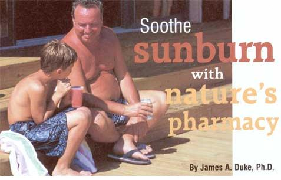
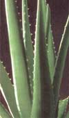
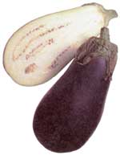
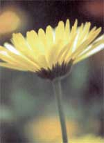

From grade school through high school, I lounged by the swimming pool all summer, soaking up the sun. In college, I played the bass fiddle and guitar at several beaches during the summer. All that sun exposure placed me at considerable risk for skin cancer, and I've endured the consequences. I've already had a patch of cancer removed, and other blemishes have appeared that soon will need attention.
I've learned my lesson. Now, whenever I know I'll be in the sun, I use sunscreen and wear long-sleeved shirts, and sometimes don lightweight gloves and a broad-brimmed hat.
Given that I frequently travel to the Amazon, all of this protection is essential. And although I do what I can to keep the sun off, I seem to get sunburned even when I'm all covered. Still, it's worth the effort to protect myself, and I'd urge you to do the same.
As burns go, most sunburns are comparatively mild. But sunburns cover more of the body than most everyday burns. In addition to increasing cancer risk, they can be quite painful. Fortunately, nature has provided us with several good remedies.
Tea (Camellia sinensis). In China, it is often recommended to apply cooled black tea to the skin to soothe sunburn. That makes sense to file because of several beneficial chemical compounds tea contains.
One researcher I know says the tannic acid and theobromine in tea help remove heat from sunburn. Other compounds in tea, called catechins, help prevent and repair skin damage and may even help prevent chemical and radiation-induced skit) cancers. The latest studies show green tea is high in chemicals called polyphenols. When ingested, these chemicals help protect the skin against damage from the harmful ultraviolet radiation in Sunlight that causes sunburn.
It's better to avoid sunburn than endure the aftereffects. But if you do spend too much time in the sun, soothe the bum by sipping iced green tea. Apply cool tea compresses to any areas of skin that have been overexposed.
Aloe (Aloe vera). The inner gel of the aloe vera leaf has been shown to speed the healing of radiation-induced burns. Scoop the gel directly from split leaves or buy commercially prepared gel at a health food store or herb shop. Apply aloe gel after showering, then reapply it a few more times each day until the pain has subsided, suggests cardiac surgeon and sports medicine specialist Dr. Robert D. Willix of Boca Raton, Florida. Usually, he says, the redness disappears in a day or two and the skin does not peel.
Cucumber (Cucumis sativus). The cool cucumber is often used for soothing burns, says ethnobotanist Albert Leung, Ph.D. Simply slice open a cucumber and wipe it directly on your skin.
Calendula (Calendula officinalis). Research shows calendula flowers speed the healing of burns by stimulating the growth of new skin cells, closing wounds and reducing inflammation. You can buy commercial skin creams containing calendula at many health food stores.
Eggplant (Solanum melongena) has a folk reputation as a sunburn treatment. It actually contains compounds Australians use for the treatment of skin cancers. If you get a sunburn, there's probably no reason why you shouldn't try applying some mashed eggplant to your skin to see if it will help soothe the bum. It might not look very pretty, but I imagine it would help cool you down.
Plantain (Plantago, various species). The late Alabama folk herbalist Tommie Bass used plantain for sunburn, stings, poison ivy and poison oak. And he was right, since plantain contains allantoin, a proven healer of injured skin cells.
Witch hazel (Hamamelis virginiana). In one study, researchers compared three sunburn treatments: witch hazel, I percent hydrocortisone and chamomile cream. Hydrocortisone was more effective than witch hazel, which in turn was more effective than the chamomile. Still, the witch hazel worked pretty well, and it's free where I come from. You can buy a commercial solution and apply it straight from the bottle in a compress. Or combine 1 teaspoon of witch hazel with 1 teaspoon of honey and a beaten egg white. You can also try a mixture of 1 tablespoon each of witch hazel, olive oil and glycerin.
In my database, vitamin E (tocopherol) is the nutrient most cited for anti-sunbum activity. You might want to try a cream containing vitamin E to soothe sunburned skin. One study showed selenomethionine, a natural amino acid, reduces the skin damage caused by sunburn. Selenomethionine is effective applied to the skin and taken orally. Dr. Karen Burke of Cabrini Medical Center in New York City recommends taking 100 micrograms a day during the summer months, and suggests 200 micrograms a day for anyone with a family history of cancer. (Brazil nuts are particularly rich in this nutrient.) The most effective course of action is to prevent sun abuse in the first place. But if you do overindulge, consider giving nature a chance to help you heal. One of the world's leading authorities on herbal healing, James Duke is author of The Green Pharmacy. Active in rain forest preservation, he leads ecotours in the Amazon.
Contact him at jduke@fathernaturesfarmacy.com.
|
 TIM KRIEGER/BRAND X PICUTRES/PICTURE QUEST The juice of the aloe vera plant heals sunburn and other minor burns. |
 FILE Eggplant has a folk reputation as a sunburn treatment. |
 FILE Soothing calendula also has edible petals and is loaded with anti-cancer lycopene.
|
|
 PAINET |
|
|